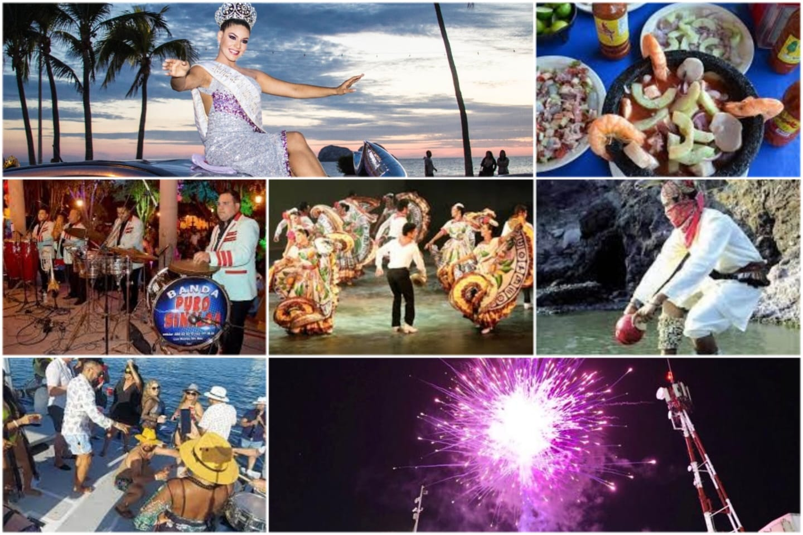

COSTUMBRE
Algunas de las costumbres más destacadas incluyen los carnavales, la Fiesta de la Taspana, la música de viento (banda sinaloense), el ulama y la celebración de fiestas religiosas como Semana Santa y el Día de Muertos.
Algunas de las costumbres más destacadas incluyen los carnavales, la Fiesta de la Taspana, la música de viento (banda sinaloense), el ulama y la celebración de fiestas religiosas como Semana Santa y el Día de Muertos.